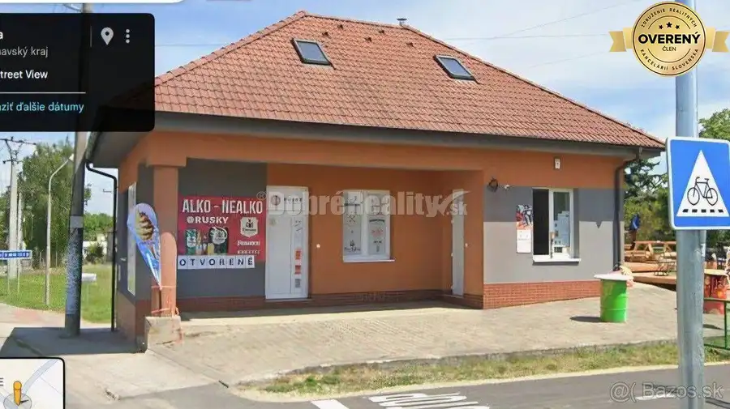

Stavebný pozemok na predaj – Ivanka pri Nitre (537 m²) | MHD, IS, rovi
Ivanka pri Nitre
- Plocha537 m²
O nehnuteľnosti
Ponúkame na predaj slnečný stavebný pozemok o výmere 537 m² (šírka 10 m x dĺžka 54 m), nachádzajúci sa v obľúbenej a dynamicky sa rozvíjajúcej obci Ivanka pri Nitre.
Pozemok je rovinatý, momentálne využívaný na poľnohospodárske účely (pestovanie kukurice), no susedná parcela už vstúpila do procesu výstavby rodinného domu, čo predznamenáva rozšírenie rezidenčnej zástavby v lokalite.
Výhody pozemku:
Výborná dostupnosť – nachádza sa pri hlavnej ceste, čo zaručuje rýchle napojenie na Nitru a výbornú dostupnosť aj počas zimných mesiacov.
MHD spojenie priamo z obce, čo je výhodou pre rodiny s deťmi, seniorov alebo ľudí bez auta.
Inžinierske siete (IS) v dosahu – voda, elektrina, plyn aj kanalizácia v blízkosti, čo výrazne uľahčuje a zrýchľuje proces výstavby.
Výborná lokalita, s dobrou občianskou vybavenosťou – škôlka, obchod, kostol, reštaurácie, autobusová zastávka v dostupnej vzdialenosti.
Parametre:
Výmera: 537 m²
Rozmery: cca 10 m (šírka) x 54 m (dĺžka)
Rovinatý terén – ideálny na výstavbu rodinného domu
Prístupová cesta: asfaltová – obecná
Táto nehnuteľnosť predstavuje výbornú investičnú príležitosť alebo ideálne miesto pre budúci rodinný dom v lokalite neďaleko mesta.
Cena 53.900,-€
Neváhajte nás kontaktovať pre viac informácií alebo obhliadku pozemku na tel.č.
Parametre
| Rozloha pozemku | 537 m² |
|---|---|
| Voda | studňa |
| El. napätie | 230V |
| Plyn | áno |
| Kanalizácia | áno |
| Terén | rovina |
| Prístupová cesta | asfaltová cesta |
| Dátum zverejnenia | 28. 8. 2025 |
Kde to je
Mohlo by Vás zaujímať
 Pozemok4
72 177 €Pozemok v Sokolovciach pod lesom 1473m2 – tiché prostredie - vyjadreni
Sokolovce
1473 m²
V zastúpení vlastníkov, EXKLUZÍVNE ponúkame na predaj pozemok o výmere 1473m2 (š.22x60 s príst.cestou 5 x 38m), v obci Sokolovce, len 5 min. od…
Pozemok4
72 177 €Pozemok v Sokolovciach pod lesom 1473m2 – tiché prostredie - vyjadreni
Sokolovce
1473 m²
V zastúpení vlastníkov, EXKLUZÍVNE ponúkame na predaj pozemok o výmere 1473m2 (š.22x60 s príst.cestou 5 x 38m), v obci Sokolovce, len 5 min. od…
 Rodinné domy10
179 900 €Exkluzívne u nás! RD/chalupa v obci Malá Lehota
Malá Lehota
5-izbový166 m²
RK Dobré Reality, ponúka na predaj očarujúcu nehnuteľnosť v obci Malá Lehota, ktorá spája pokoj vidieka s komfortom moderného bývania. Nachádza sa…
Rodinné domy10
179 900 €Exkluzívne u nás! RD/chalupa v obci Malá Lehota
Malá Lehota
5-izbový166 m²
RK Dobré Reality, ponúka na predaj očarujúcu nehnuteľnosť v obci Malá Lehota, ktorá spája pokoj vidieka s komfortom moderného bývania. Nachádza sa…

Nebytové priestory3 229 000 €Na predaj RD na komerčné účely Krakovany 220 m²2. podlažie RK Dobré Reality ponúka na predaj výnimočnú komerčnú nehnuteľnosť s výbornou viditeľnosťou a strategickou polohou v obci Krakovany, len pár minút od…